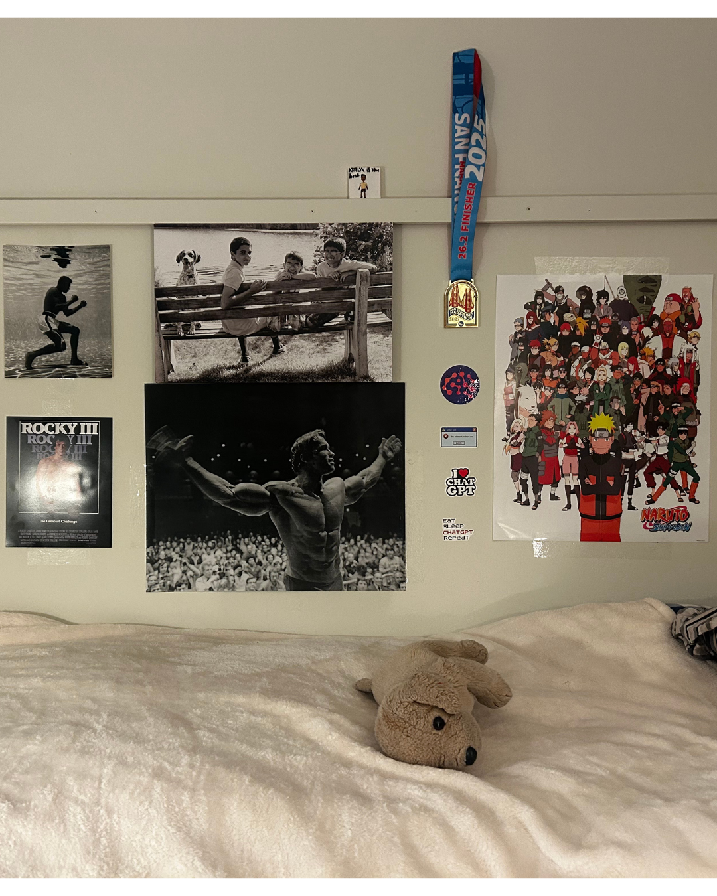
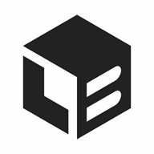
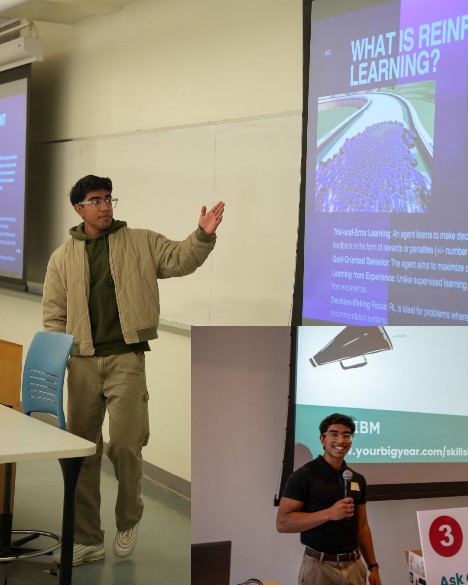
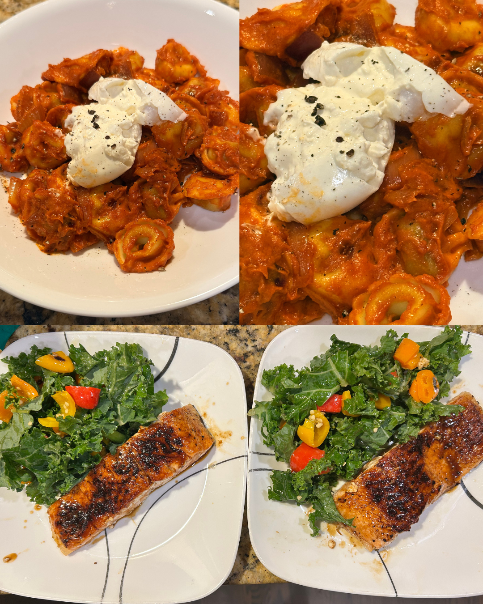
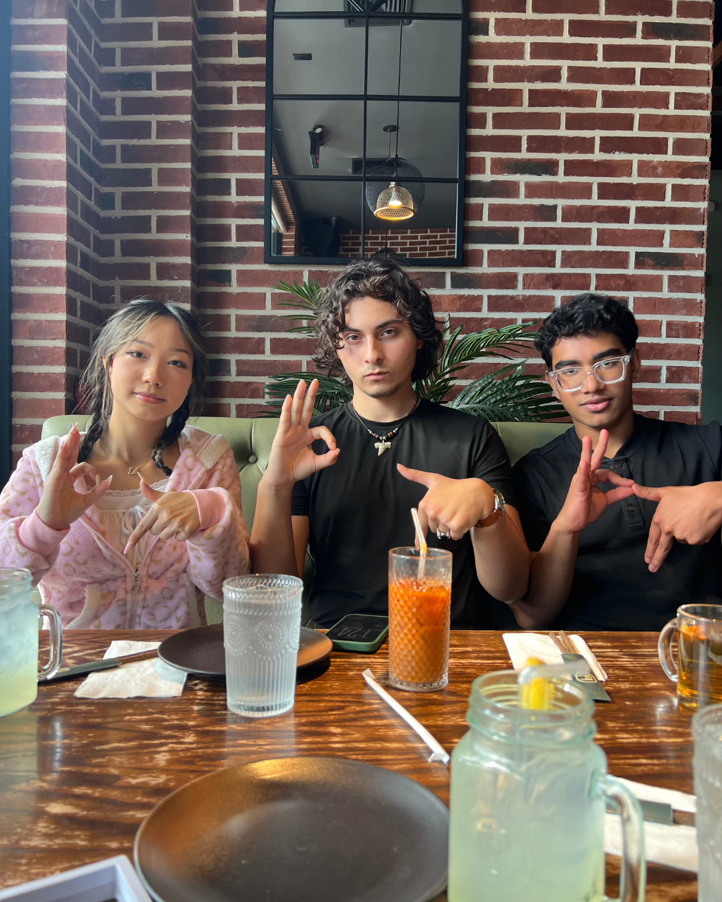
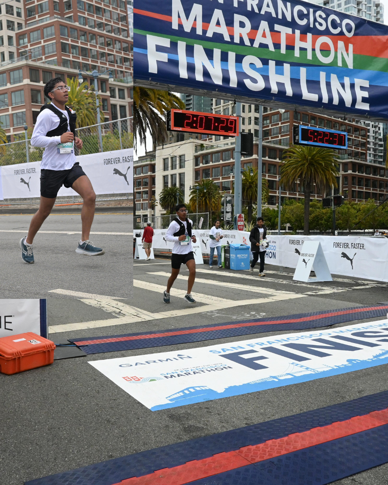
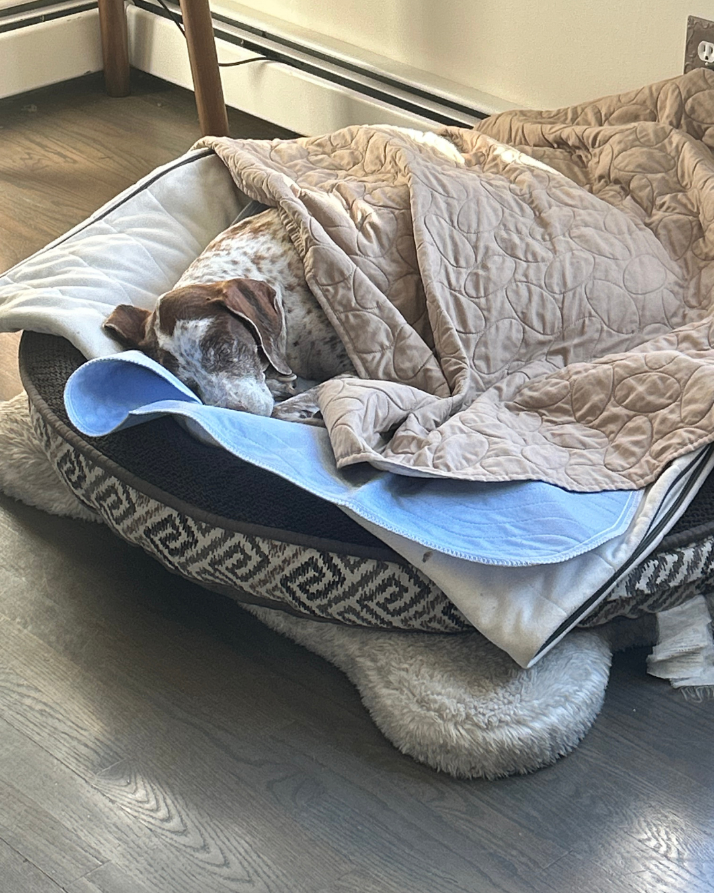
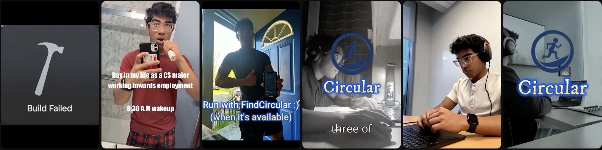
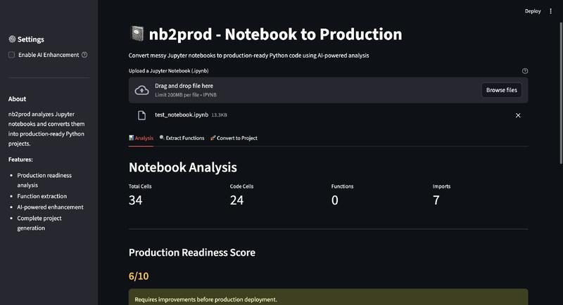
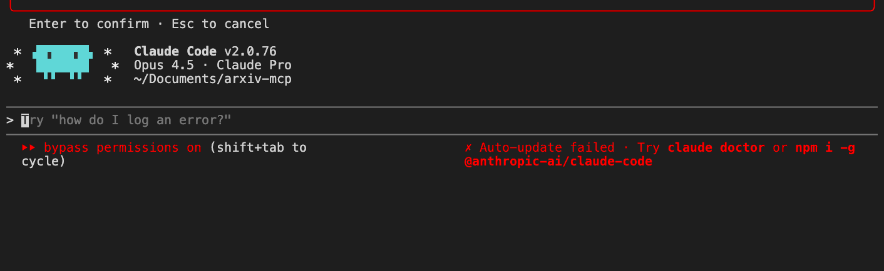

// the wall. Ali. Schwarzenegger. Balboa. A made bed. Naruto, marathon bibs, the brothers. The things I keep close to stay disciplined.
 fairfield → stony brook
fairfield → stony brook
I was born with primary ciliary dyskinesia — my lungs clear slower than most. I chose to run marathons anyway.
That's the frame for everything else: I build tools that turn constraints into compounding advantages. ML research at SBU. Circular, the iOS training app I ran my first marathon on. nb2prod, turning messy notebooks into shipped software. A club I run with 800 other curious people. I like systems that make the next person faster.














AI Community @ SBU (800+). PM directing 15+ workshops, guest speakers, $2k+ sponsorships. Built Q-Learning + DQN models to teach RL to 80+ peers.
Athletics & music. SF Marathon finisher (4:54, Aug '25). Varsity wrestling, track, volleyball. Violin · regional and school orchestras.
┌─────────────┐ │ say hi. │ └─────────────┘ // open to new work // summer 2027 + grad // ml · full-stack · ios
I'm always up for a good conversation — research, product, marathon training tips, or a recipe trade. Reach out via any of the channels on the right.